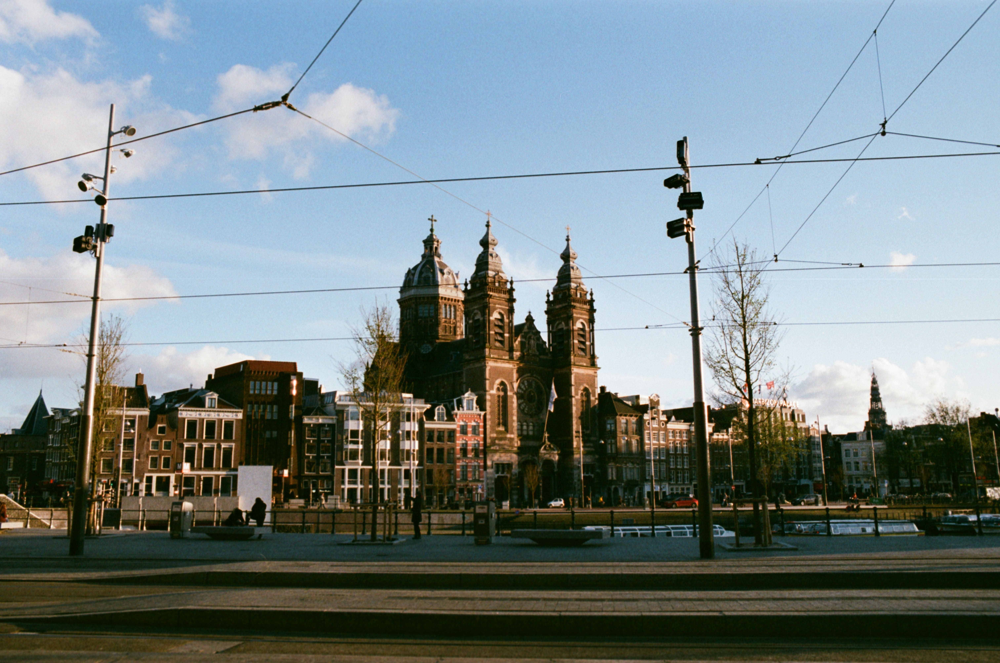

Black and White
During my time there I'm more interested in shooting with black and white films, this
is because price wise its cheaper but I am also curious on shooting with black and white.
After I shot 3 rolls now I understand what people said about the fun in shooting black and white, It
trains you to see things differently and to practice your composition, I was amazed with some of
the shot that I took because it was unexpectedly eye pleasing.

Italy
There is something magical about Italy, the people the food is in my oppinion one of the best in europe
with mesmerizing architecture in some of the city makes you want to visit it again. When I was there I
spend most of my time in the northern part near the adriatic sea, my love for the sea what's brings me there.
It was all worth the exhaustion and my appetite was being satisfied as I walk and eat everywhere I go.
I would love to go back there someday.

Barcelona
I always dream to go to Barcelona and see the city, Sagrada familia and the Camp Nou stadium. It was unbelieveable
when I sat foot from the metro station just right outside the sagrada familia as I remembered when I was a child
I would really like to go there and here I am. Barcelona is very much alive not only with tourist but also the ambience
like to song 'Barcelona' by Ed Sheeran that coudl bring you happines it was very much true.

Netherland
In my oppinion Netherland is the best country to live in Europe, I stayed here for 6 months and I still can't take my thoughts
out of it. I;m in love with my city Groningen as forever I will call it my home. Living there I learned a lot, not only
I met a lots of new poeple I also dicover myself as I'm more focus on myself more often. I will be back to visit or maybe staying
someday, I hope it's very possible. It means